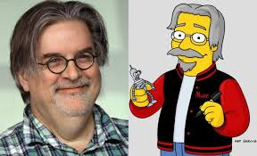

Matt Groening
Matthew Abraham Groening (Portland, 15 de febrero de 1954)1 es un dibujante, productor de televisión y escritor estadounidense, conocido principalmente por ser el creador de Los Simpson. Es también el creador de Futurama y la serie de Netflix (Des)encanto, y es el autor de la tira cómica semanal La vida en el Infierno, que publicaba en el semanario de Licorice Pizza, una tienda en la cual trabajaba. Hizo su primera venta como caricaturista profesional a la revista Wet en 1978.2 La vida en el Infierno atrajo la atención de James L. Brooks. En 1985, este contactó con Groening con el propósito de trabajar en un proyecto de animación para el programa de la cadena FOX The Tracey Ullman Show. Originalmente, Brooks quería que Groening adaptase a sus personajes de La vida en el Infierno para el programa. Temiendo perder sus derechos de autor, Groening decidió idear algo nuevo y creó a una familia animada, los Simpson,3 nombrando a sus miembros como sus propios padres y hermanas, mientras que Bart es un anagrama de brat, que significa malcriado.45 Los cortos se convertirían en una serie: Los Simpson, la cual desde entonces ha producido 657 episodios en 30 temporadas. En 1997, Groening se asoció con David X. Cohen y creó Futurama, una serie animada sobre la vida en el año 3000, la cual se estrenó en 1999. Luego de cuatro años en el aire, el programa fue cancelado por Fox en 2003, pero Comedy Central encargó 16 episodios nuevos para realizar cuatro películas en DVD, las cuales fueron lanzadas a la venta en 2008.67